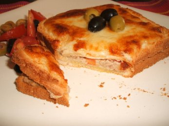

Croque-monsieur chèvre pesto
Ingredients
1×
- 0.5 poivron
- 1 cuillère de concentré de tomate
- pain de mie
- 1 tranche de jambon
- 2 -3 rondelles de chèvre
- 1 cuillère de pesto

Préparation
Étape 1
Couper 0.5 poivron en lamelles et le cuire 15min à la vapeur ou à l’eau bouillante.
Étape 2
Tartiner 1 cuillère de concentré de tomate sur une tranche de pain de mie. Ajouter 1 tranche de jambon, le poivron et 2 -3 rondelles de chèvre.
Étape 3
Tartiner 1 cuillère de pesto sur une 2e tranche de pain de mie et refermer. Cuire 15min à 190ºC.